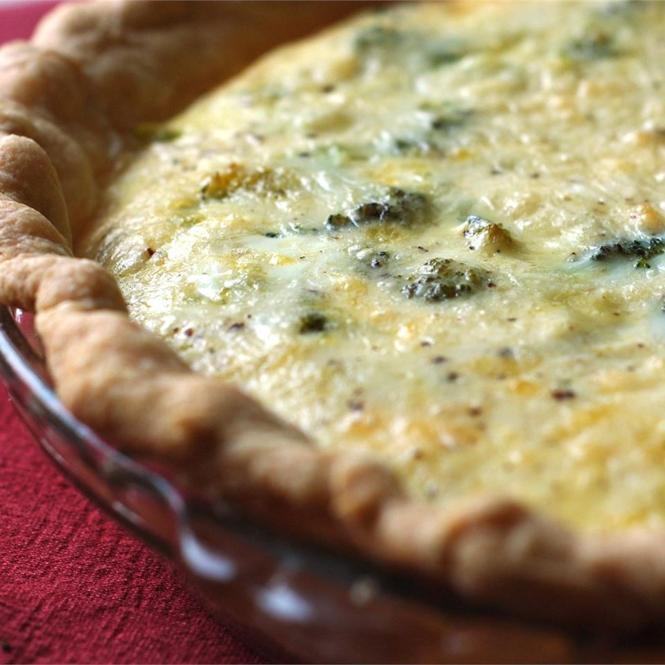

Broccoli Quiche Recipe

Ingredients
- 3 tablespoons of butter
- 2 cups of chopped Broccoli
- 1 onion, minced
- 1(9 inch) unbaked pie crust
- 1 1/2 cups Shredded mozzerella
- 4 eggs, well beaten
- 1 ½ cups milk
- ½ teaspoon black pepper
- 1 teaspoon salt
- 1 tablespoon butter, melted
Step 1
Preheat the oven to 350 degrees F (175 degrees C).
Step 2
Melt 2 tablespoons butter in a large saucepan over medium-low heat. Add broccoli, onion, and garlic; cook, stirring occasionally, until vegetables are soft. Spoon vegetables into pie crust and sprinkle with mozzarella cheese; set quiche on a baking sheet.
Step 3
Combine eggs and milk together in a bowl; season with salt and pepper. Stir in remaining 1 tablespoon melted butter; pour egg mixture over vegetables.
Step 4
Bake in preheated oven until the center of the quiche has set, about 30 to 50 minutes.
Nutrition Facts
Per Serving: 388 calories; protein 16.1g; carbohydrates 21.5g; fat 26.8g; cholesterol 167.3mg; sodium 898.2mg.